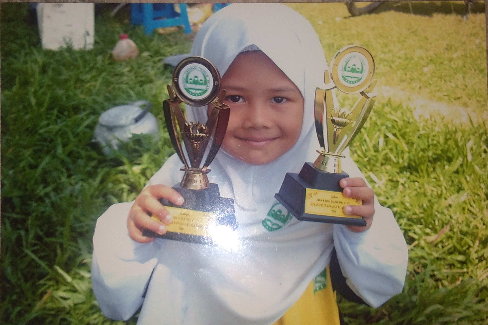
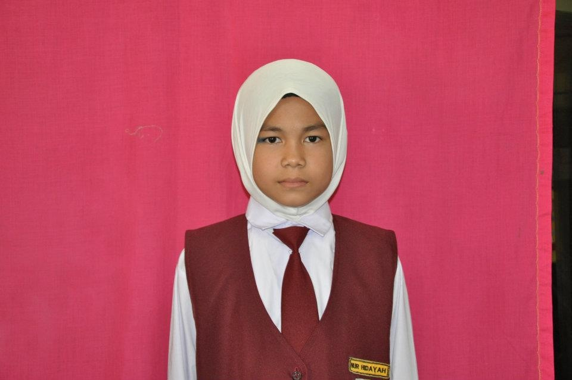
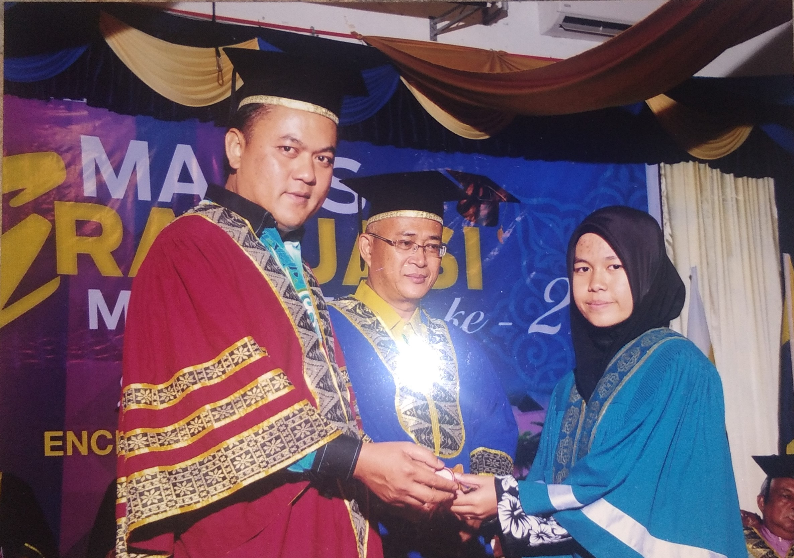
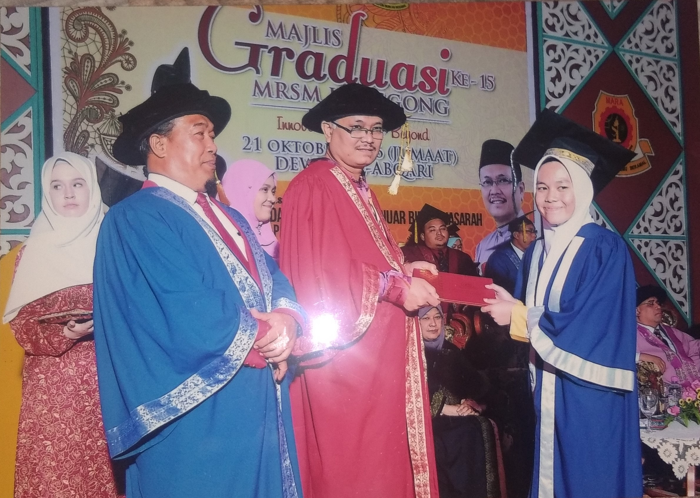
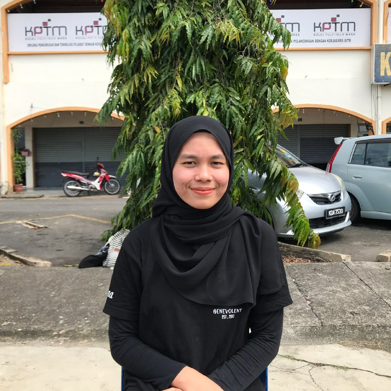
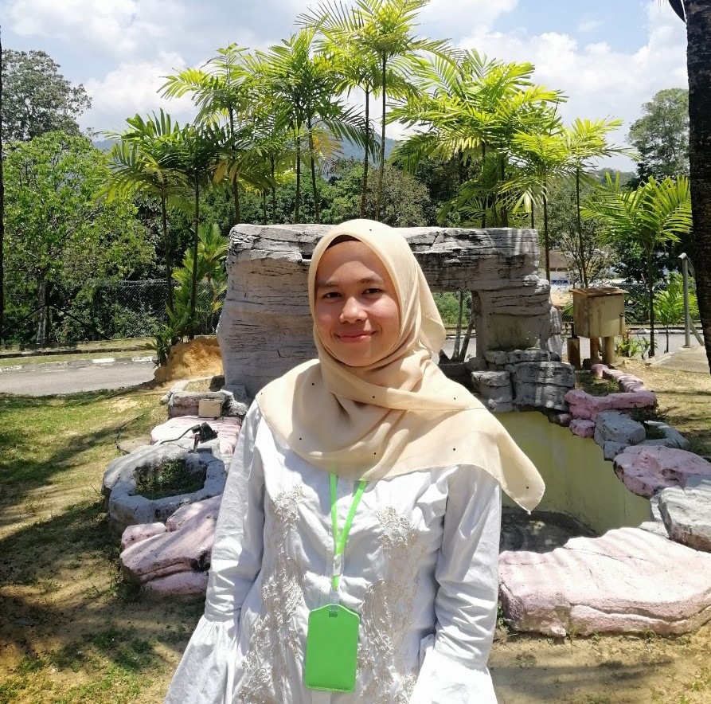

|  |
Kindergarten schoolAt the age of 5 and 6 years old, I attended
kindergarten at Tadika Pasti Nur Iman near my home.
From there I learned to count, spell, read,
maintain manners and others. |
|  |
Primary schoolFrom 2006 to 2011, I attended at Sekolah Kebangsaan
Kota Lama Kanan. It is also close to my home. I started school
there when I was 7 years old. I worked hard at the
age of 12 because I wanted to get excellent results in UPSR exam.
In the end, I was really grateful to get 5As in UPSR. |
|  |
Secondary school (Lower Form)When I was 13 years old, I attended school at
SMK Sayong for only 3 weeks because I got a boarding school
at SMK Simpang Beluru. But I only went to school for a week
because I was also get an offer to continue studying at MRSM Gerik.
I had graduated for form 3 at the age of 14 years old.
My result for Pentaksiran Tingkatan 3 (PT3) is 2A 3B 2C 3D. During form 4,
I was still studying in MRSM Gerik but it was only for
the 5th month since i got the offer to move to MRSM Lenggong.
I also majored in pure science. So i was only 3
and a half years in MRSM Gerik. |
|  |
Secondary school (Upper Form)On June 15, 2015, I registered at Mrsm Lenggong and
also majored in pure science. I took Sijil Pelajaran Malaysia(SPM)
in 2016 and the results was very bad because I did not study hard.
My SPM examination results is 1A 1B 1B+ 2C+ 2D 1E 1G and
the failed subject is Addmath. I also feel bad for not
studying hard. But i also trying to further my study
for diploma level. |
|  |
DiplomaIn May 2017, I received an offer to continue my studies
at Kolej Poly-Tech MARA Alor Setar. The field of study offered is a
Diploma in Office Management and Technology in Collaboration with UiTM for
2 years and 6 months. So I decided to accept the offer because I was
interested in that field. Various subjects that I have
learned are Personality Development, Office Administration, Mandarin, Executive
Note-Taking, Office Simulation and so on. By January 2020,
I had successfully completed my diploma by earning a 3.84 cumulative
grade point average. |
|  |
DegreeOn February 18, 2020, the results of further study to Uitm was announced through online. I was successfully offered to study at Uitm Machang, Kelantan. The field offered is a Bachelor of Office Systems and Management(Hons.). So I accepted the offer. Within 4 days they giving to settle all things before register. I went to Alor Setar to finish my diploma things and others. Then, I bought some necessities like toiletries, stationaries, food and so on. On February 22nd, I registered and packed the things in the room. In the next week, we are starting class. But only for 3 weeks into class due to the outbreak of the Corona Virus(Covid19). We were asked to return home safely. |